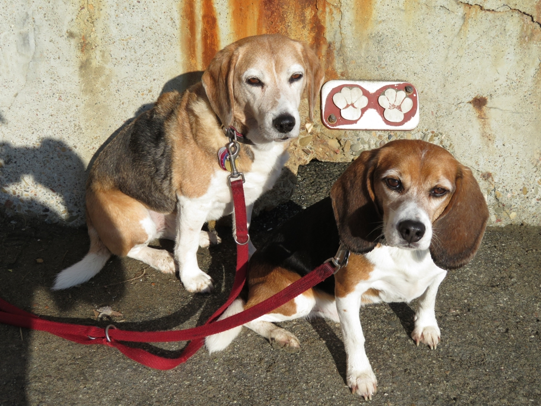

<--Previous Up Next-->

At Fort Point, Huxley and Wallace's last stop in their tour of continental San Francisco. Above them is a pair of handprints marking a point where runners turn around; next to them is the dog version.
Huxley Beagle Wallace Beagle